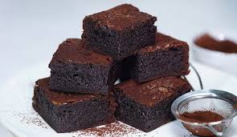
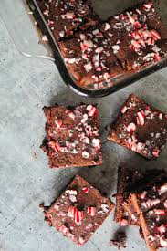

Directions
Preheat the oven to 350°. Butter a 9-by-13-inch baking pan and line with parchment paper; allow 2 inches of overhang on the long sides.
In a heatproof bowl, combine two-thirds of the chopped chocolate with the 2 sticks of butter. Set the bowl over a pot of simmering water and stir until melted. Scrape the chocolate into another bowl and let cool slightly. Add the remaining chopped chocolate and the peppermint extract to the heatproof bowl and melt over the simmering water; remove from the heat and let cool slightly.
 In a medium bowl, whisk the eggs with the brown sugar until combined. Whisk in the chocolate-butter mixture until glossy and thick. Sprinkle the flour and salt into the bowl and stir until just incorporated. Spread the brownie batter in the prepared baking pan. Dollop the peppermint chocolate onto the brownie batter and swirl in with a table knife.
Bake the brownies in the center of the oven for 15 minutes. Sprinkle the crushed candy canes on top and bake for 10 to 15 minutes longer, until the edges are set and a toothpick inserted in the center comes out with a few moist crumbs. Let the brownies cool in the pan for at least 2 hours. Cut into squares and serve.